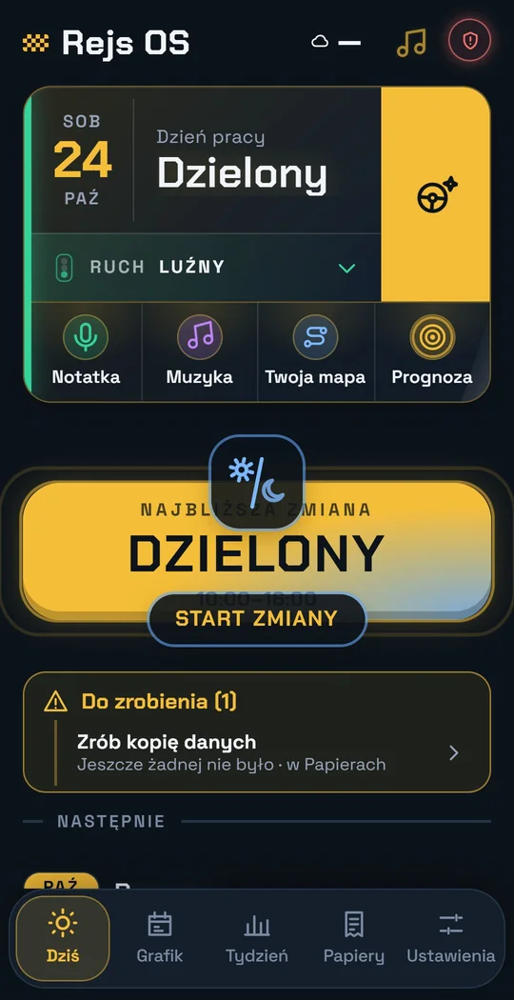
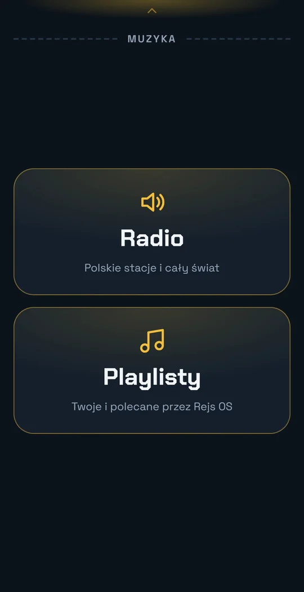
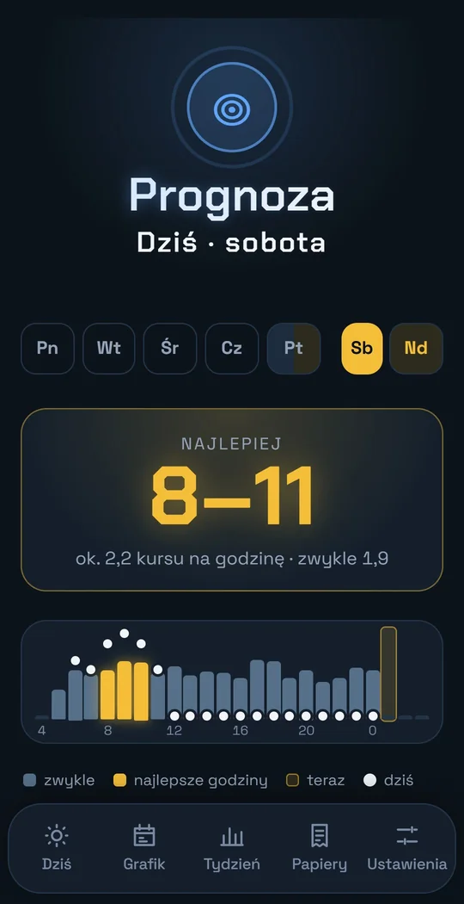
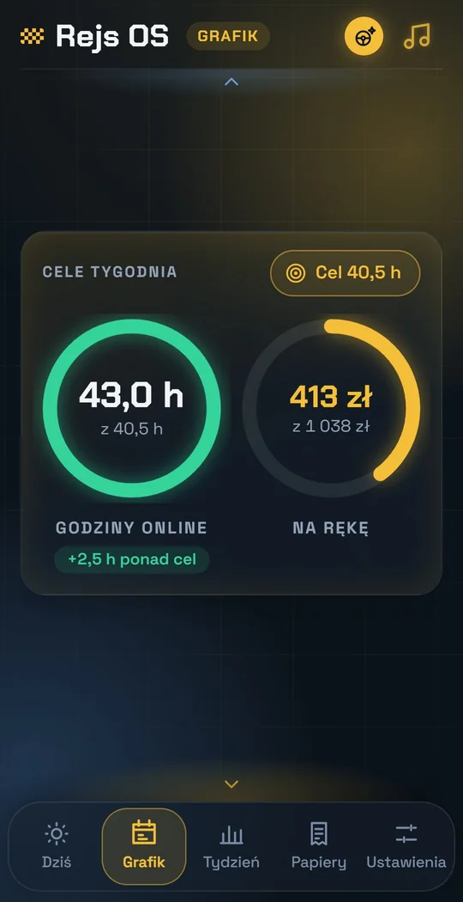
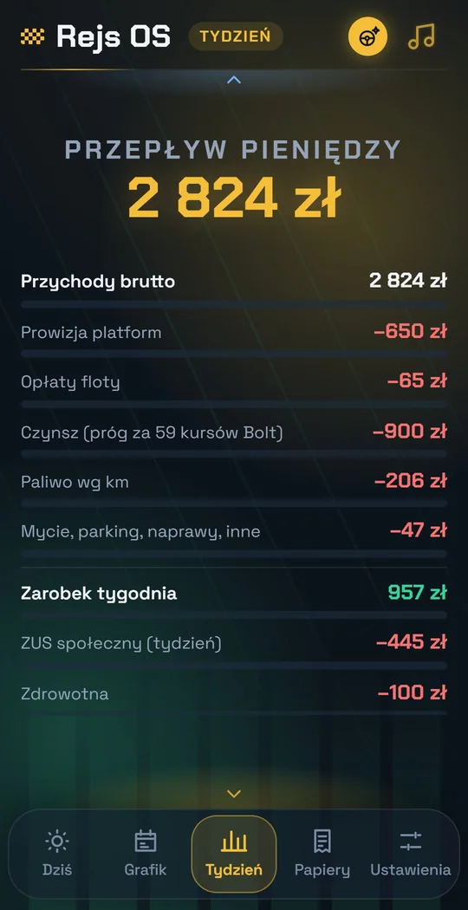
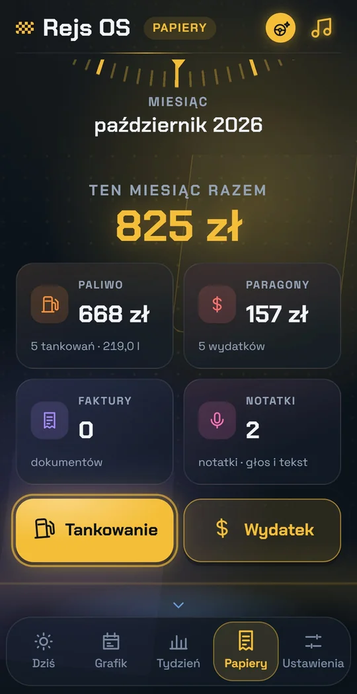
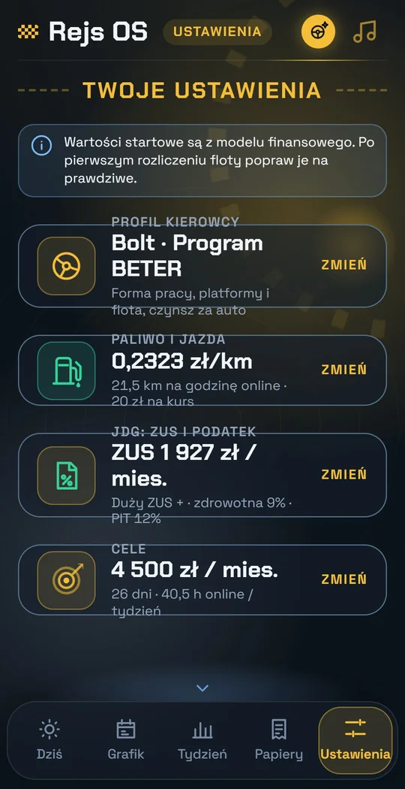

Przed zmianą
Dziś na jednym ekranie
Najbliższa zmiana, ruch na mieście i lista rzeczy do zrobienia, zanim ruszysz. Notatka, muzyka, mapa i prognoza pod kciukiem.
Dla kierowców na aplikacji
Rejs OS liczy to na bieżąco, w trakcie zmiany. Ty jedziesz, aplikacja pilnuje kosztów, godzin i papierów.
Rejs OS
Licznik zarobku
Przykładowy dzień. W aplikacji liczby biorą się z Twoich kursów, ustawień czynszu i spalania.
Cały tydzień w kieszeni
Duże przyciski, jedna liczba na kafel, ciemny ekran, który nie oślepia nocą. Czytelne w uchwycie w sekundę.
Przewijaj →

Najbliższa zmiana, ruch na mieście i lista rzeczy do zrobienia, zanim ruszysz. Notatka, muzyka, mapa i prognoza pod kciukiem.

Polskie i zagraniczne stacje oraz Twoje playlisty jednym dotknięciem, bez szukania po telefonie w trakcie jazdy.

Najlepsze godziny dnia policzone z Twoich własnych kursów. Widzisz, ile kursów na godzinę zwykle wpada i kiedy ruszyć.

Ustaw, ile godzin online chcesz w tygodniu. Rejs OS ułoży zmiany i przypomni o nich, zanim ruszysz.

Przychód brutto, prowizja platform, opłata floty, czynsz, paliwo. I ile zostaje Ci po opłaceniu podatków.

Zdjęcie paragonu albo faktury, tankowanie, wydatek. Na koniec miesiąca jedna paczka dla księgowej.

Platformy, flota, paliwo, ZUS i cele w jednym miejscu. Każda opcja ma opis, co robi.
Bańka nad nawigacją
„Nowy kurs” i „Koniec kursu” wiszą nad nawigacją. Trasa zapisuje się tylko między tymi dwoma dotknięciami, nigdy w pustym przebiegu.
Prywatność
Ile zarabiasz, gdzie jeździsz i co tankujesz, to Twoja sprawa. Rejs OS nie zakłada Ci konta i nie trzyma Twoich danych u siebie.
Dlaczego Rejs OS
Ozdobne animacje stają, kiedy przewijasz, więc aplikacja nie dławi telefonu, na którym chodzi nawigacja.
Liczy godziny bez 6 h odpoczynku, Bolt i Uber razem, i ostrzega przed limitem 12 h.
Pomaga ułożyć sen pod start zmiany, krok po pół godziny, bez rewolucji z dnia na dzień.
Gdy ktoś wsiada, ścisza, wycisza albo zmienia stację. Po kursie wraca do Twojej muzyki.
Zmiana, cel dnia i szybkie akcje bez otwierania aplikacji. Kwoty ukryte, dopóki nie dotkniesz oka.
Ukraiński i angielski są w drodze, żeby każdy kierowca czytał liczby w swoim języku.
Cena